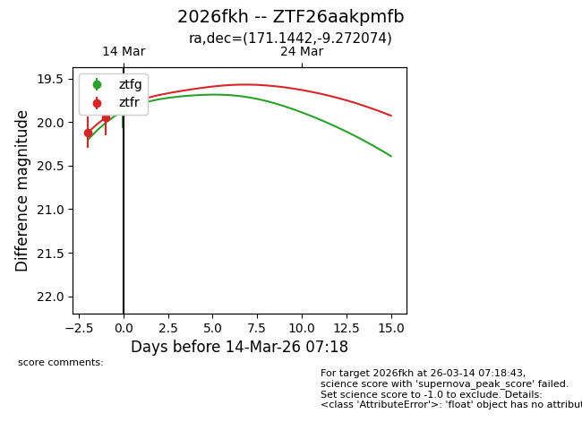
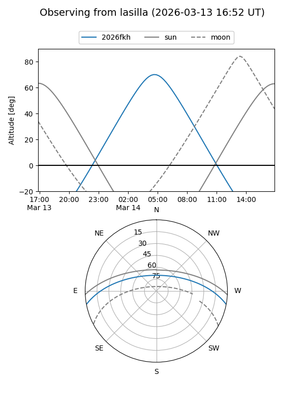
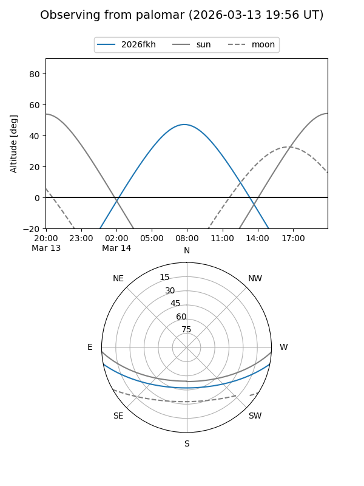
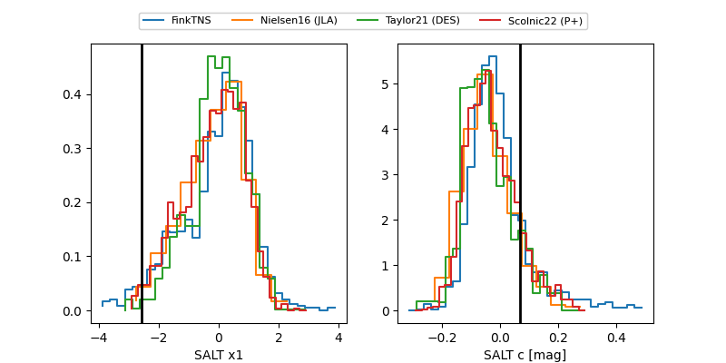

2026fkh
Target 2026fkh at 2026-03-14 07:21
Aliases and brokers:
FINK: link
Lasair: link
ALeRCE: link
TNS: link
YSE: link
alt names
ZTF26aakpmfb (ztf,fink_ztf)
2026fkh (tns,yse)
Coordinates:
equatorial (ra, dec) = 171.1442,-9.27207
equatorial (HMS+DMS) = 11:24:34.60,-09:16:19.47
galactic (l, b) = (269.8941,+47.94964)
Flags:
Photometry:
last ztfg=19.88, ztfr=19.95
1 ztfg, 2 ztfr detections
Lightcurve

Visibility


Additional plots
